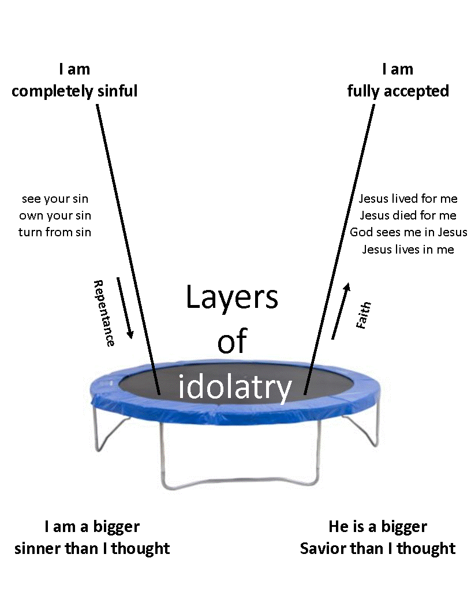
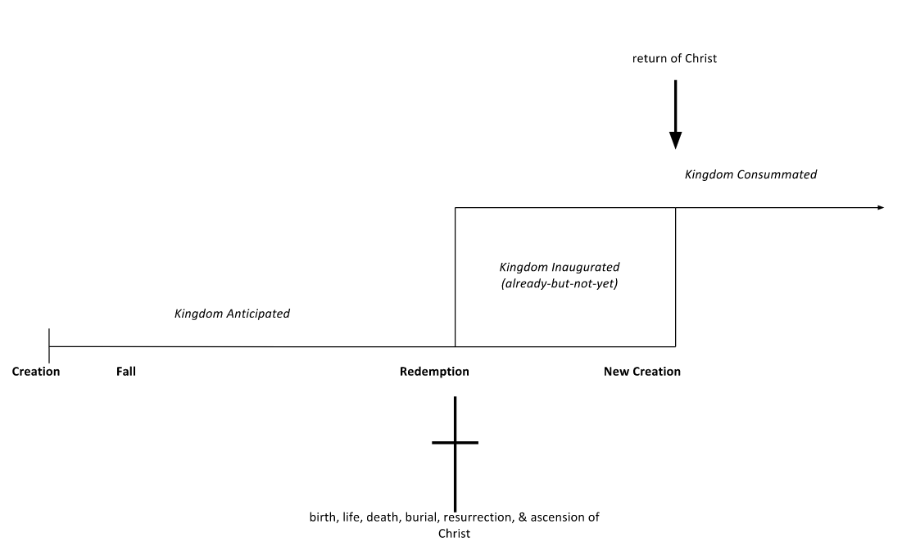
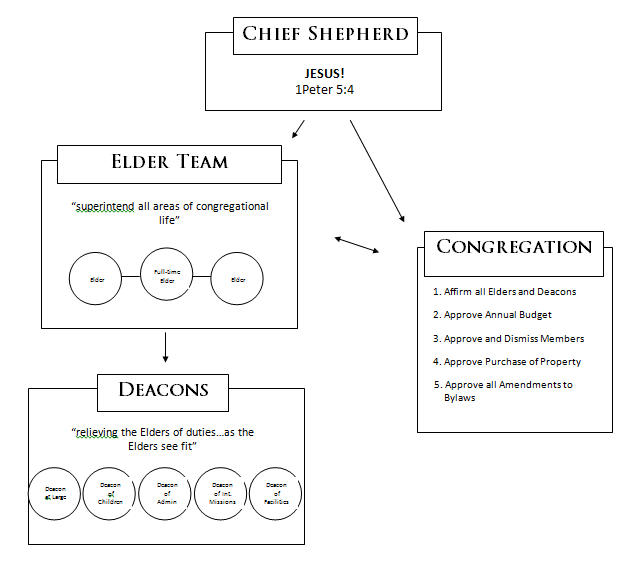
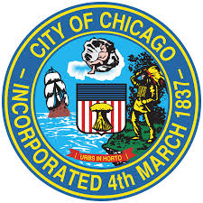
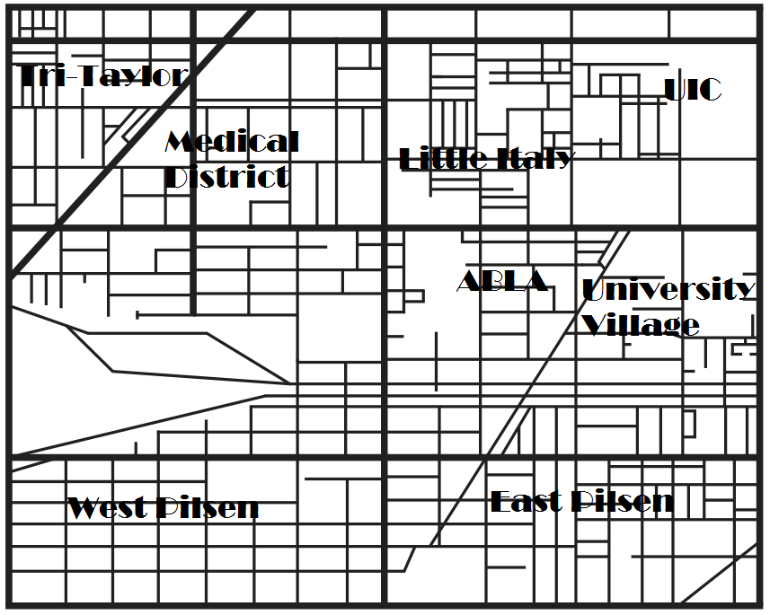

Welcome to
Joining the Mission
This is for those who want to get to know our church at a deeper level and learn what it would mean to become part of us and join with us on our mission in Chicago.
Work through this material on your own time. Then come to the next Mission Class.
It’s About the Good News!
Immanuel Baptist Church is first and foremost about the gospel.
‘Good news’ is the literal meaning of the word ‘gospel’.
And the gospel is the centerpiece of Christianity.
The Apostle Paul says in 1 Corinthians 15:1-4:
“Now, brothers, I want to remind you of the gospel I preached to you, which you received and on which you have taken your stand. By this gospel you are saved, if you hold firmly to the word I preached to you. Otherwise, you have believed in vain. For what I received I passed on to you as of first importance: that Christ died for our sins according to the Scriptures, that he was buried, [and] that he was raised on the third day according to the Scriptures.”
In 1 Corinthians 15:1-4 we see that the gospel is of first importance. This means that if a church makes anything other than the gospel central, it is missing the point.
The gospel is also something that Christians constantly need to be reminded of. It’s not just the basics that you believe in order to become a Christian but then move on from to other things. The gospel is not just the A-B-Cs but the A-to-Z of the Christian life. It doesn’t just ignite the Christian life, but is the fuel that keeps it going.So what is the gospel? It is that Christ died for our sins according to the Scriptures, that he was buried, and that he was raised on the third day according to the Scriptures. It is news about what Jesus has done in time and space 2,000 years ago. The gospel is a declaration, a report of something that happened in history (Please read the previous sentence at least 10 times).
So why is the news of Jesus’ death, burial, and resurrection good? There are two crucial angles to look at it from… and then a third.
The Individual Angle
The first way to understand the goodness of the good news is to look at what it means for you personally.
This approach generally looks across the whole Bible and pulls out the following categories: God – Man – Christ – Response.
God is completely perfect. Each of us was made to have a relationship with God. However, our sin (our willful defiance of God’s laws and steady determination to set other things, especially ourselves, up in God’s place) keeps us out of the presence of a perfect God and in fact justly incurs his judgment. But Jesus (God in human flesh) took our sin on himself and bore the judgment in our place on the cross – Christ died for our sins according to the Scriptures.
This is good news because even though we are sinful people who deserve a holy God’s eternal wrath, we can be united by faith to Jesus – the One who was sinless and yet suffered in our place on the cross so that we could be forgiven, justified, reconciled to God, and adopted into his family forever. There’s nothing we can do to earn God’s favor. It’s purely a gift of grace! Salvation is something that has been accomplished for us by Jesus’ death, burial, and resurrection.
Jesus’ burial confirms that he really died. And his resurrection confirms that he was really righteous and his death really atoned for sins. And so if we repent of our sins and put our trust in Jesus, then when God looks at us he sees us in his Son, that is, our sins are taken care of and we are counted righteous. “God made him who had no sin to be sin for us, so that in him we might become the righteousness of God” (2 Cor. 5:21).
The gospel says, “You are more sinful than you ever imagined, yet on account of Christ’s death, burial, and resurrection you are more accepted than you ever dared dream.” This is what makes Christianity utterly unique and distinguishes it from all other religions. As Tim Keller is fond of saying – ‘Religion’ says, “I obey, therefore I’m accepted.” The gospel says, “I’m accepted, therefore I obey.” Those are two radically different concepts!
The Individual Angle
An Illustration
The illustration on below helps in understanding the individual aspect of the gospel. It’s called ‘The Gospel Trampoline’. We encourage you to spend time bouncing on it. Actually, spend the rest of your life going deeper and higher!
As we go deeper into the darkness that is in our hearts, we will peel back more and more layers of idols. We should constantly be seeking to go underneath the surface sins and see the deep-seated root sins. The deeper we go in repentance the higher we can bounce in faith as we realize the amazing truth of the gospel – I am completely sinful and yet on account of Christ’s death, burial, and resurrection I am completely accepted by God! As Martin Luther said, “Simul justus et peccator” – simultaneously just and a sinner. It’s amazing! And it’s also the key to transformation because the higher we bounce in faith, the more we worship God for his grace and thus the less prone we will be to worship our idols.
Idolatry
Some Questions That Help Expose Our Idols
- What other than Jesus has become your main source of significance, happiness, meaning and purpose?
- What other than being a child of God are you using as your primary identity?
- What have you used to make yourself feel accepted or worthy before God, yourself and others?
- What do I worry about most? What, if I failed or lost it, would cause me to question whether or not I wanted to live?
- What do I rely on or comfort myself with when things go bad or get difficult? What do I do to cope/feel better?
- What do I think most easily about? What does my mind go to when I am free? What preoccupies me? What do I daydream about?
- What makes me feel the most self-worth? What am I the proudest of? What do I want to be known for?
- What do I lead with in conversations? What do I want to make sure that people know about me fairly early on in the conversation or relationship?
- What prayer, unanswered, would make me seriously think about turning away from God?
- What do I really want and expect out of life? What would really make me happy? What is my hope for the future?
- Whom must I please? Whose opinion of me counts? From whom do I desire approval and fear rejection?
- On whose shoulders does the well-being of my world rest? Whose coming into my life or political power would make everything better? In what situations do I feel pressured or tense? Confident and relaxed? How do I cope?
Idolatry
Going Deeper
An idol is far more than a statue someone burns incense to. Ezekiel 14 talks about idols in the heart. In this sense, an idol represents the central value by which all other values are measured and judged and that which all other values serve. Worshipping such a false god is ultimately that which fuels the sin in our lives. It is the sin underneath most sins. It is the root from which most behavior is simply the fruit. Do you recognize these idols in your heart?
Review the picture below and the list and grid on the next few pages because the greater awareness we have of our sin combined with a growing awareness of God’s holiness is what will enlarge our awe and wonder at God’s grace in the cross of Christ.
Idolatry
Common Idolatries List
- Comfort idolatry: “Life only has meaning/I only have worth if — I have this kind of pleasure experience, a particular quality of life.”
- Approval idolatry: “Life only has meaning/I only have worth if — I am loved and respected by —.”
- Control idolatry: “Life only has meaning/I only have worth if — I am able to get mastery over my life in the area of —.”
- Power idolatry: “Life only has meaning/I only have worth if — I have power and influence over others.”
- Image idolatry: “Life only has meaning /I only have worth if — I have a particular kind of look or body image.”
- Helping idolatry: “Life only has meaning /I only have worth if — people are dependent on me and need me.”
- Dependence idolatry: “Life only has meaning /I only have worth if — someone is there to protect me and keep me safe.”
- Independence idolatry: “Life only has meaning /I only have worth if — I am completely free from obligations or responsibilities to take care of someone.”
- Work idolatry: “Life only has meaning /I only have worth if — I am highly productive, getting a lot done.”
- Achievement idolatry: “Life only has meaning /I only have worth if — I am being recognized for my accomplishments, if I am excelling in my career.”
- Materialism idolatry: “Life only has meaning /I only have worth if — I have a certain level of wealth, financial freedom, and very nice possessions.”
- Religion idolatry: “Life only has meaning /I only have worth if — I am adhering to my religion’s moral codes and accomplished in it’s activities.”
- Individual person idolatry: “Life only has meaning/ I only have worth if — this one person is in my life and happy there and/or happy with me.”
- Irreligion idolatry: “Life only has meaning /I only have worth if — I feel I am totally independent of organized religion and with a self-made morality.”
- Racial/cultural idolatry: “Life only has meaning /I only have worth if — my race and culture is ascendant and recognized as superior.”
- Inner ring idolatry: “Life only has meaning /I only have worth if — a particular social grouping or professional grouping or other group lets me in.”
- Family idolatry: “Life only has meaning /I only have worth if — my children and/or my parents are happy and happy with me.”
- Relationship idolatry: “Life only has meaning /I only have worth if — Mr. or Ms. ‘Right’ is in love with me.”
- Suffering idolatry: “Life only has meaning /I only have worth if — I am hurting, in a problem — only then do I feel noble or worthy of love or am able to deal with guilt.”
- Ideology idolatry: “Life only has meaning /I only have worth if — my political or social cause or party is making progress and ascending in influence or power.”
Idolatry
Idolatry Grid
The Cosmic Angle
Another way to understand the goodness of the good news after you’ve seen it from the individual angle is to look at what it means for the whole world.
This approach generally looks along the story-line of the Bible and sees the following plot: Creation – Fall – Redemption – New Creation
God created the world in perfect harmony. The first humans rebelled against him, thus plunging the world into disarray, not just individually, but interpersonally, societally, ecologically, spiritually, etc… But God embarked on a plan of redemption that focused largely on the nation of Israel and reached its climax in the death, burial, and resurrection of Jesus the Messiah. Jesus started something that he will return again one day to wrap up when he remakes the whole cosmos (including the bodies of those who trusted in him) to be in a perfect, eternal state. This is the overarching narrative of the Scriptures.
This is good news because even though we live in a world that is full of evil, injustice, pain, and heartache as a result of our sin, Jesus has begun to make all things right. He died to deal definitively with our sin, and he rose again to inaugurate the New Creation as its first installment!
The gospel is no less than the justification of individual sinners by grace alone, through faith alone, on the basis of Christ’s death, burial and resurrection alone. But there’s more! The hope offered in the Scriptures is not that we can “die and go to heaven.” It’s that “heaven” is coming down to swallow up this earth. Jesus died and rose again to defeat death and sin and evil and will come again one day to put the world right and put us in it to live with perfect interpersonal, societal, ecological, and spiritual harmony.
One of the ways the Bible talks about this is by referring to the good news of the kingdom of God. Jesus began his earthly ministry by saying, “The time has come… The kingdom of God is near. Repent and believe the good news” (Mk. 1:15). Toward the end of his earthly ministry Jesus said that “this gospel of the kingdom will be preached in the whole world as a testimony to all nations, and then the end will come” (Mt. 24:14). And in Acts 8:12 we see Phillip preaching “the good news of the kingdom of God and the name of Jesus Christ.” [Christ = Messiah, the long-awaited king who ushers in the long-anticipated kingdom of God] Jesus’ death, burial, and resurrection began a new kingdom – a subversive kingdom of love and peace and justice that will one day rule the whole world. Until then, the resurrected Christ sits at the right hand of the Father on his throne… reigning.
The good news refers to more than just individual salvation. It has a cosmic dimension. Jesus – through his death, burial, and resurrection – has begun to redeem and remake the whole world! This brings hope. God doesn’t just have a wonderful plan for your life; he has a wonderful plan for the whole universe! See Mt. 19:28, Acts 3:21, and especially Col. 1:20.
Perhaps the diagram below will be of some help in getting the ‘big picture’.
The God Angle
If the gospel is left just at personal escape from judgment and imputation of Christ’s righteousness and the hope that the world is being set right, then it’s missing the main point, the thing that makes the news of Christ’s death, burial, and resurrection GOOD, and that’s GOD!
The gospel is good news because it gets us to God, the source of all good!
1 Peter 3:18 says, “Christ died for sins once for all, the righteous for the unrighteous, to bring you to God.” This is the greatest good of the gospel. He is the perfection of all beauty and the source of all satisfaction.
And Revelation 21, which describes the consummation of the kingdom (the return of Jesus to transform this world and us), talks about the final state as a perfected society, a city in fact. And there we read, “Now the dwelling of God is with men, and he will live with them. They will be his people, and God himself will be with them and be their God” (v. 3). The greatest thing about the New Creation will be that God is there!
What amazing news! Because of Jesus’ death, burial, and resurrection we can be forgiven and accepted into God’s everlasting kingdom where we will enjoy him together forever and ever – the infinite source of joy and delight!
For more about this concept, check out John Piper’s book, God is the Gospel: Meditations on God’s Love as the Gift of Himself. Here’s just a snippet:
"The highest, best, final, decisive good of the gospel, without which no other gifts would be good, is the glory of God in the face of Christ revealed for our everlasting enjoyment. The saving love of God is God’s commitment to do everything necessary to enthrall us with what is most deeply and durably satisfying, namely himself. Since we are sinners and have no right and no desire to be enthralled with God, therefore God’s love enacted a plan of redemption to provide that right and that desire. The supreme demonstration of God’s love was the sending of his Son to die for our sins and to rise again so that sinners might have the right to approach God and might have the pleasure of his presence forever." (pp. 13-14)
The Mission
We’ve been talking about the great and glorious gospel – the good news.
We’ve seen how it’s central – everything else (even good and necessary things like building healthy marriages, helping people with their finances, fighting injustice, serving the poor) is peripheral.
We’ve seen how it never grows old. The good news, rightly understood, never becomes old news. Every single problem in life ultimately stems back to a failure to grasp the gospel fully.
We’ve seen how it’s historical. The gospel is not merely a collection of ideas or concepts (e.g. grace, forgiveness). It’s news about an event that has happened in time and space – a real person named Jesus died for our sins, was buried, and came back to life in fulfillment of all the hopes put forward in the Scriptures.
We’ve looked at the good news from the individual angle and the cosmic angle and ultimately the GOD angle. We’ve seen how Jesus lived the perfect life we could never live, died the death we should have died, and gives us a righteousness we could never earn. And not only that, history is going somewhere! The gospel brings both personal peace and a grand scale hope… and God is the source, means, and goal of it all (see Rom. 11:36).
This gospel gives meaning, purpose, and significance to life. Those who have heard and believe this good news are freed from guilt, despair, futility, and an otherwise pointless existence.
So now what is our mission in life? It is to glorify God by proclaiming the good news of what he’s done in Jesus! We do this in three main ways:
- We get vocal
- We get vocational
- We get involved
Get Vocal
The great, 20th century British preacher D. Martyn Lloyd-Jones used the following illustration:
"Suppose a medieval king marshaled his army and went out from his walled city to engage the enemy on the battlefield. If the king failed to defeat the enemy, what would he do? He would send military advisers back to the city right away – people who would direct those left in the city how to prepare for a siege. 'Put archers in this tower, fortify that wall, close these gates, load the catapults, dig in and prepare to fight.'' The king would send advisors to tell them what they must do. But what would happen if the king went off to battle and won a decisive and definitive victory over the enemy? What would he do? He would then send heralds/messengers back to the city to announce the good news of what has happened; to declare that the battle has been won. 'Rejoice! Live your lives in light of this peace that the king has won for us!'”
Martyn Lloyd-Jones said that every other religion offers advice, but Christianity alone offers good news. Advice is counsel about how to do something that needs to be done. News is a report about something that has already happened and there’s nothing more that needs to be done. Do you see the difference?
The gospel is the good news of Jesus’ death, burial, and resurrection which was the decisive victory over sin and Satan and death. He has paid for sins once and for all. Christianity is not an advice religion (here’s what you have to do); it is a news religion (here’s what Jesus has done).
Now news, by very definition, must be told. Those who say, “Preach the gospel at all times, use words if necessary,” may not really understand what the gospel is. Think about it… Here’s the point: those who know the good news to be good will tell it whenever they can. This is our mission in life. At the end of the Gospel according to Luke we see Jesus telling his disciples, “This is what is written [in the Scriptures]: The Christ will suffer and rise from the dead on the third day [the gospel], and repentance and forgiveness of sins will be preached [heralded/declared/proclaimed…] in his name to all nations, beginning at Jerusalem. You are witnesses of these things” (Lk. 24:46-48). Likewise, those who have heard and believed the good news today are also commissioned to be witnesses to all nations. That’s a great task! That’s your mission. It’s not supposed to be a burden, but a natural outburst from a heart that has truly grasped the goodness of the good news. This will mean getting vocal.
Vocalizing the gospel is called evangelism – literally good newsing. A good resource for this is Mark Dever’s slim volume called The Gospel & Personal Evangelism. Some helpful tools in learning how to evangelize are:
- 2 Ways to Live & Christianity Explained (emphasizing the individual angle)
- Story (coming from the cosmic angle)
Christians believe the good news and share it frequently!
Get Vocational
So what are you saying? Do I have to become a pastor or a missionary? A missionary? YES! But you don’t have to go overseas… more on this later. A full-time pastor? NO! Nor do you have to work for the church or a Christian school or a Christian company or a law firm that only takes freedom of religion cases.
A vast, vast majority of Christians are supposed to spend their lives working a regular job in the real world. We see in the Bible that even the Apostle Paul was a tent-maker by trade (see Acts 18:3). In fact, having Christians in the workforce is necessary for the carrying out of the mission. What better way to spread the gospel than to send vocal Christians out into the places where people spend roughly 1/3 of their lives?
But your job is more than an excuse to meet people you can share the gospel with. It’s not just a way to make money so you can have food on the table (see 2Thess. 3:10) or have something to give to those in need (see Eph. 4:28) or to support those taking the gospel to unreached places (see Rom. 15:24), though it is all that. But you’re also supposed to enjoy it!
God created this world and put humans in it to play a part in the shaping and running of society (see Gen. 1:28). As a result of the first humans’ sin, this world is now fallen and so societies are dysfunctional and corrupt. But Jesus died, was buried, and was raised to life to inaugurate a New Creation. He has instituted a new kingdom that will grow like yeast through dough and when he returns will take over the world (see Lk. 13:21).
By working for and contributing to the good of society, you are playing out and prefiguring the cosmic aspect of the gospel – that Jesus has begun to remake this world and will do so completely one day. The gospel frees us and fills us with love for our neighbors, which is expressed in serving them through our work. And when Christians are involved in a variety of fields and disciplines for the overall well-being, justice, and flourishing of society they bring credibility to their vocal witness to the gospel.
All this is to say that in thinking about our mission as Christians, we need to regain a proper sense of vocation.
The Oxford Dictionary defines vocation this way:
vocation /vōkáyshәn/ n. 1 a strong feeling of fitness for a particular career or occupation (in religious contexts regarded as a divine calling); call, calling, mission…
So many Christians have no sense of calling. To many a calling is merely for those whom God calls to go to the bush in Africa as international missionaries. But they don’t see being a student as a “call, calling, mission.” They don’t understand that being a computer programmer or a public school teacher or a dentist or an engineer or a secretary or an actor is a vocation in the religious sense of the word.
It’s said that Martin Luther was once approached by a man who had just been converted and was eager to serve the Lord. The man asked Luther what he should do (i.e. become a pastor or evangelist?). Luther replied, “What is your work now?” “I’m a shoemaker,” the man said. To the cobbler’s surprise Luther said simply, “Then make a good shoe and sell it at a fair price.”
Part of living out the gospel and carrying out your mission involves embracing your often times ‘secular’ calling and pursuing excellence in it. How has God equipped you? What role in society has he directed you to? Where does he want you to be salt and light (see Mt. 5:13-16)? Being a plumber is just as valid as being a preacher. Two great books to read on this would be Gene Edward Veith’s God at Work: Your Christian Vocation in All of Life and Tim Keller’s Every Good Endeavor: Connecting Your Work to God’s Work. You can also check out www.faithandwork.org or scan the archive of ‘Vocation Vignettes’ on www.immanuelblog.wordpress.com.
Get Vocational
Relationships
Now, here’s something that may throw you for a loop. It may not even be on some of your radar screens. But you also need to see marriage/singleness and kids/no kids as an aspect of vocation too.
A majority of Christians are called to be husbands or wives. And a majority of them are called to be fathers or mothers. In fact, this vocation supersedes all others because family is the bedrock social institution. For some wives and mothers it may even replace a career and there’s great dignity and purpose in that.
Take seriously whether God is calling you to be married and whether he’s calling you to be a parent. Broken families are one of the greatest effects of sin on our world. Being married and raising kids to love the gospel is one of the most effective strategies for changing the world and most likely is part of your mission in life.
Singleness is also a special calling from God that frees people up to play unique parts in the kingdom. If that’s what God has called you to (even for a season) embrace it and take advantage of the opportunities it opens up for you to be used for the advancement of Christ’s kingdom.
Here’s the point: ask God what role(s) he’s calling you to serve him in. For most people it will mean getting a ‘secular’ job and being an employee. And for most people, it will also mean getting married and being a husband or a wife. And for most husbands and wives it will mean having children and being a father or mother. None of these roles are in any way ‘less spiritual’ than others. In fact, these vocations are the main avenues for living out our mission to glorify God by spreading the good news of what he’s done in Jesus.
Get Involved
Another thing to ask God is where he’s calling you to be vocal and have a vocation. Wherever he calls you to live and work, he’s also calling you to be a missionary, whether that’s the bush in Africa or a city in America.
The where question is just as much a part of your calling as the what. For most people, driven by personal career goals, where you live is dependent on where you can get the best job offer and then what neighborhood or house brings the most status or comfort. But if you’re driven by kingdom of God goals then your mission and purpose in life is not your own glory; it’s to glorify God by spreading the good news of what he’s done in Jesus. And that changes everything. You’ll want to go wherever you can best achieve those goals.
So once you’ve understood the gospel as good news for you and for the world, and once you’ve understood that good news by its very nature demands to be vocalized, and once you’ve figured out what God’s calling you to do and who he’s calling you to marry (if anyone) and where he wants you to be, then you put it all together and begin to think and act like a missionary in that context. And that means at least one more thing: you get involved.
Imagine that you were dropped by parachute into a jungle in Africa as a missionary. What would you do? First, you would go about learning the language, the culture, the customs, the history of the locals. In the process you’d find ways to engage the culture and begin building relationships with people who lived there, finding out what makes them tick, hanging with them on their own turf, and then having them into your tent. All this is in an effort to find ways to connect the individual, cosmic, and GOD angles of the good news with their hopes, dreams, fears, and desires and see them eventually accept the good news and become vocal about it themselves.
This is what we expect of missionaries ‘over there’. But the very same things are what every Christian is supposed to be doing ‘back here’. Get involved where God has called you. Get a library card, read up on the history of the area, subscribe to the local paper. Find out what kind of people live around you, what they do for fun, and start doing the same things. Get involved in the LSC, a local book club, organize a block party, have new people on the street over for a BBQ, play basketball at the local park, go for drinks and wings at the end of the day with coworkers, arrange play dates for the kids, volunteer at a community center, take your laptop to the coffee shop down the street. Find out who your local elected officials are and ask them about the community’s greatest needs. Get involved in people’s lives. Chat with the owner of the pizzeria on the corner, have neighbors over for your kids’ birthday parties, shovel the snow for the old lady next door, borrow tools from the guy down the street, pray for your mailman by name, shop at local businesses, boycott businesses that mistreat their workers, take your kids to a nearby nursing home to visit shut-ins at Christmas, join a Meet Up group. You get the idea. Get involved!
All of this is in an effort to find ways to connect the individual, cosmic, and GOD angles of the good news with the hopes, dreams, fears, and desires of the people living in your mission field. And it’s with the hope of seeing them in time accept the good news and become vocal about it themselves.
As some missiologists have said, Christians everywhere are supposed to “seep into the cracks and crevices of a society” in order to share the gospel with those who haven’t yet heard it.
Joining The Mission
Church Membership
So the marvelous truth of what Jesus accomplished in his death, burial, and resurrection is the greatest news that could ever be told. It changes everything.
We are completely accepted and loved by God, despite our sinfulness, because Jesus took our sin on himself and paid for it on the cross and gave us his righteousness instead!
Plus, God has in Christ begun to and will one day completely remake this world to make it the home of righteousness (cf. 2Pet. 3:13) where those of us who belong to Christ will dwell!
And finally, we are forgiven and freed so that we can feast on the richest of fare forever… and that is God!
This never grows old. It is the reality we will progressively revel in for all eternity and thus the thing that should occupy us all our days in this life. This is the Good News.
And this gospel brings great purpose and meaning to our existence. Our lives are now about bringing glory to God by being vocal with the gospel, by being faithful in our vocation and by being involved in the neighborhood God has called us to. This is our mission.
But there’s still one final and crucial piece of the puzzle. This mission is not a solo mission! Just as much as God is calling you to repent and believe the gospel and then to get vocal, get a vocation, and get involved, God is also calling you to join a local church where you live. This is part of the whole package. Becoming a member of a local church is how you join the mission.
Here we will consider together the three most commonly asked questions about membership:
- WHY do I have to become a member of a church?
- HOW do I become a member of Immanuel?
- WHAT is expected of members of Immanuel?
Listen along to the audio that goes with the following slides for a detailed answer to each of these questions…
Why Membership?
- Christ left behind a community.
- The Trinity
- Sin => Redemption => People (Israel in OT; Church in NT)
- Jesus
- Group Project
- “It’s impossible to avoid community and be close to Jesus. Wherever Jesus is, there are other people.”
- Matthew 16:18 – “I will build my church, and the gates of hell will not overcome it.”
- The Book of Acts
- Invisible/Universal Church and Visible/Local churches
- GOSPEL!
- Human to God
- Human to Human
- Ephesians 2:11ff
- Individualism
- Church = tool by which the gates of hell would be stormed and the kingdom of God would be advanced
- Community fosters cooperation.
- Mission --> Church
- "The task is bigger than any one person"
- Romans 12:5 – “In Christ, we who are many form one body, and each member belongs to all the others.”
- 1 Corinthians 12:21 – “The eye cannot say to the hand, ‘I don’t need you!’ And the head cannot say to the feet, ‘I don’t need you!’”
- We all need each other…
- Community provides encouragement.
- Three Directions
- Irreligion
- Gospel
- Religion
- Regular rhythm of weekly worship:
- Proclamation
- Ordinances
- Singing
- Fellowship
- Church is more than Sundays, however...
- We need other people to help us see how the gospel applies to our lives.
Why Membership?
- Community teaches submission.
- suspicion => authority <= rebellion
- Arena:
- Family (Eph. 5:22 – 6:4)
- Job (Eph. 6:5-9)
- Government (Rom. 13:1-7)
- Hebrews 10:25 – “Do not give up meeting together.”
- Ephesians 5:21 – “Submit to one another out of reverence for Christ.”
- Mission --> Church > Elders
- Hebrews 13:17 – “Obey your leaders and submit to their authority…”
- GOSPEL = God paid the death penalty for our treason in the person of Jesus.
- Community allows accountability.
- Hebrews 3:12-13 – “See to it, brothers, that none of you has a sinful, unbelieving heart that turns away from the living God. But encourage one another daily, as long as it is called Today, so that none of you may be hardened by sin’s deceitfulness.”
- We need to be “kept in line with the truth of the gospel” (Gal. 2:14).
- We can’t just trust ourselves to do that!
- ‘One Another’ Commands:
- (especially Luke 17:3; Colossians 3:16; Romans 15:14; James 5:16!!)
- Church Discipline (see Matthew 18:15-17 and 1 Corinthians 5)
- Community requires commitment.
- For some more on these ideas we encourage you to pick up Kevin DeYoung and Ted Kluck’s
Why We Love the Church: In Praise of Institutions and Organized Religion.
Why Membership?
FAQs
Okay, but did Jesus and the NT really have in mind all this (buildings and budgets and membership processes) when they talked about Christian community?
- An understanding of the GOSPEL!
- A sense of mission.
- A regular gathering.
- Biblical teaching.
- Participation in the ordinances ( baptism & the Lord's Table).
- Pastoral leadership.
- Accountability.
I’ve been burned before by churches. What if this church hurts me?
- There’s no perfect church!
- “If you were to join a perfect church, I am sure it would not be perfect after you had been admitted into it.” – C.H. Spurgeon
But church is so boring and draining!
- Church ≠ club
-
Consumerism -
Perfectionism -
Individualism -
Religiosity
How Do I Become A Member?
- The first requirement for membership at Immanuel is faith in Christ as your Lord and Savior, which should be accompanied by baptism.
- The process to become a member follows these steps:
- You attend Immanuel regularly for a few months.
- You notify an Elder of your interest in becoming a member.
- You go through Joining the Mission materials.
- After this you attend the next scheduled Mission Class.
- Then you meet individually with an Elder.
- Your name is then submitted in writing to the current members at least one week before a membership meeting.
- At the next membership meeting, you are presented by the Elders to the church and a vote is taken on your membership.
What Do I Do As A Member?
- Sign and adhere to the Church Covenant.
- Regularly attend worship services.
- Be growing in your personal walk.
- Support the church financially.
- Be involved in a Small Group.
- Be active in ministry.
- Attend membership meeting.
- Pray for Immanuel.
Our Church Covenant
As a member of Immanuel Baptist Church, I declare myself to be a follower of Jesus Christ and affirm that I cannot be such apart from a community of other Christ followers. I recognize that community requires commitment and I therefore make my commitment official and public by willingly entering into this covenant with my fellow brothers and sisters in Christ at Immanuel Baptist Church:
- A Christian’s life must be distinct amidst a world of sin. Therefore, I covenant to live a holy life of integrity and purity according to God’s standards (cf. 2Cor. 7:1, 1Thess. 4:7).
- The ultimate mission of the church is to spread the message of salvation through Jesus and expand the kingdom of God. Therefore, I covenant to intentionally seek opportunities where I can share the gospel with those who do not currently believe (cf. Mt. 28:18-20).
- Love of God and love of neighbor go hand in hand. Therefore, I covenant to practice religion that God our Father accepts as pure and faultless by exhibiting a concern for the poor and oppressed and championing the cause of social justice in whatever ways I can (cf. Mt. 22:39, James 1:27).
- Community requires openness. Therefore, I covenant to foster relationships of authenticity and transparency by letting people in the community into my heart and life (cf. James 5:16).
- When sinful people are together they are bound to step on toes or rub each other the wrong way eventually. Therefore, I covenant to not grow bitter or leave (cf. Eph. 4:31-32), but to patiently cultivate genuine love between members (cf. 1Jn. 4:7-12) and proactively work to preserve the unity of the body (cf. Eph. 4:2-3).
- Being a part of a body means that members are intimately interrelated. Therefore, I covenant to consider how my words and deeds affect my fellow members and act accordingly (cf. Rom. 12:4-5, 14:1-23).
- Scripture grants oversight of the church to its Elders. Therefore, I covenant to joyfully submit to their leadership (cf. Heb. 13:17).
- A Christian’s life must be distinct amidst a world of sin. Therefore, I covenant to live a holy life of integrity and purity according to God’s standards (cf. 2Cor. 7:1, 1Thess. 4:7).
- In addition, I specifically covenant to:
- regularly attend Sunday worship services (cf. Acts 20:7, Heb. 10:25)
- seek to grow in my practice of personal spiritual disciplines (1Tim. 4:7b)
- faithfully give of my finances to the church according to my means (cf. 1Cor. 16:2)
- be actively involved in a weekly small group (cf. Acts 2:46b)
- seek ways to serve the church with my gifts (cf. 1Pet. 4:10)
- attend Membership Meetings
- and pray consistently for the church and its members (cf. Col. 1:3)
- I recognize that participating in such a church community requires accountability. Therefore, I covenant to lovingly rebuke fellow members when necessary, accept rebuke when received, and unflinchingly extend forgiveness upon repentance (cf. Lk. 17:3-4). I also covenant to submit to and uphold church discipline (Mt. 18:15-17, 1Cor. 5).
- Finally, if I should ever move from this place, I covenant to, as soon as possible, unite with some other gospel-preaching church where I can carry out the spirit of this covenant.
Immanuel's History
- The Dream
- Starting in the fall of 1991...
- They prayed that:
- God would instill in them a love and reverence for His Word
- The Church would once again embrace the cross of Jesus and revel in the all-sufficiency of Christ's atoning sacrifice
- God would saturate the Church with the spirit of prayer
- On the first Sunday of September, 1994, Immanuel Baptist Church had its first service in Loyola Park, Chicago
- The Early Days
- Immanuel Baptist Church first sought to minister to the 'poor and needy' in the Rogers Parkneighborhood
- Immanuel was forced to re-direct its ministry focus
- Other Locations
- Immanuel found a shelter in two local theaters
- First in the Mary-Arrchie Theater
- Second in the Strawdog Theater
- The Lincoln Park Years
- God provided a place in Lincoln Park - Seminary Ave. Community Church
- We continued to reach out to young adults and college students from other neighborhoods of Chicago as well as from the suburbs
- In 2001 our founding pastor left.
- We extended a call to Nathan Carter in June of 2004.
- It All Comes Together
- The Elders presented to the congregation a vision for re-planting the church. Why?
- the ethnic and economic diversity
- the university setting
- the proximity to an artist district
- and the lack of churches
- First official service in the UIC Area on August 28, 2005
- We met at Duncan YMCA Chernin Center for the Arts
- The we met at Chicago Hope Academy
- The next phase lasted four years at 1417 W. Taylor St.
- Finally, in August of 2011 we moved 2 blocks south to The Meeting Place on Roosevelt
- Immanuel now has a neighborhood-specific vision for reaching a particular place and its people:
- poor and needy
- yuppies, students and artists
- A Church Planting Church
- On July 11, 2010, Chirst Redeemer Community Church was birthed out of Immanuel
- Whatever we can do!
Statement Of Faith
Please watch all these videos walking you through our church’s Statement of Faith.
- Introduction
- Article 1 - The Scriptures
- Article 2 - Of The True God
- Article 3 - Of The Fall Of Man
- Article 4 - Of The Way Of Salvation
- Article 5 - Of Justification
- Article 6 - Of The Freeness Of Salvation
- Article 7 - Of Grace In Regeneration
- Article 8 - Of Repentance And Faith
- Article 9 - Of God's Purpose Of Grace
- Article 10 - Of Sanctification
- Article 11 - Of The Perseverance Of The Saints
- Article 12 - Of The Harmony Of Law And Gospel
- Article 13 - Of A Gospel Church
- Article 14 - Of Baptism And The Lord's Supper
- Article 15 - Of The Christian Sabbath
- Article 16 - Of Civil Government
- Article 17 - Of The Righteous And The Wicked
- Article 18 - Of The World To Come
- Article 19 - The Family
Immanuel's Mission
Immanuel's Vision
Our vision comes from TWO PICTURES in the Bible of God's people living in major global cities and then a METAPHOR.
- The Church in Antioch (Acts 11, 13)
- Antioch was the Chicago of the first century Roman world, just behind Rome and Alexandria in size and strategic influence. It was a cosmopolitan city, densely populated while highly segregated. Into this setting the good news about the Lord Jesus was boldly spoken and a great number of people believed and turned to the Lord. The watching world had to come up with a brand new name for this phenomenon because for the first time ever people were crossing ethnic/social barriers to worship the same God – the disciples were called Christians first at Antioch.
- Just like the church in Antioch, we want Immanuel to be a community called together by the gospel, constantly seeing a great number of people brought to the Lord, and consistently encouraged to remain true to the Lord with all our hearts by a team of teachers. We desire the evidence of the grace of God to be unmistakable among us, making people genuinely glad. We expect multi-ethnicity and diversity. As seen with the church in Antioch, we will also foster relationships of interdependence with other churches. We seek to be a people open to the Holy Spirit and found regularly worshipping the Lord. And, just as the Antioch church did, our dream is to constantly be sending people off to start new churches. We know nothing will happen unless the Lord’s hand is with us, but we will fast and pray and take risks to be part of a movement of the gospel.
- The Israelites in Babylon (Jeremiah 29)
- Babylon was another big and powerful city in ancient times. As the seat of the Babylonian Empire it represented all that was against God. It was in many ways a dark place, synonymous with sin, and full of idolatries. The Babylonians, under Nebuchadnezzar, attacked the people of God in 597 B.C. and carried off many of them to live in exile there. But God encouraged his people through the prophet Jeremiah not to form a ghetto hoping for a quick return to Jerusalem. They were to recognize that God carried them there and had good plans for them. He told them: Build houses and settle down; plant gardens and eat what they produce. Marry and have sons and daughters; find wives for your sons and give your daughters in marriage, so that they too may have sons and daughters. Increase in number there; do not decrease. Also, seek the peace and prosperity of the city…. Pray to the Lord for it, because if it prospers, you too will prosper.
- Just like the exiles in Babylon, we want Immanuel to be a community that is distinct and separate from the sinful culture around us while at the same time concerned and involved. We will be humble servants of the city in our various vocations, praying and working for its ultimate good. We realize that a movement of the gospel here will take time and require longevity, so while embracing the opportunity to impact and export people coming through our city we will also push hard for more and more Christians to settle down in the city, get married, have kids, buy houses, and embrace a multi-generation vision for a movement.
Immanuel's Values
We value...
- …the BIBLE as inerrant, authoritative, and fully sufficient for life and ministry.
- …the GOSPEL as as the main thrust of the whole Bible.
- …JUSTIFICATION by faith alone, through grace alone, on the basis of Chirst alone as central to the Gospel.
- …local CHURCHES as the necessary entailment of the Gospel.
- …DIVERSITY as the demonstration of the power of the Gospel.
- …expository, Christ-centered PREACHING as the backbone of every church.
- …ELDERSHIP as the method of leading individual churches.
- …personal DISCIPLESHIP as an integral part of the culture of a church.
- …PRAYER as the appropriate posture of a church.
- …CHURCH PLANTING as the constant priority of all churches.
- …the CITY as an exciting and strategic place for church planting.
- …GLOBAL MISSIONS as the responsibility of every church, not to be ignored in the pursuit of local church planting.
- …the GLORY OF GOD as the end goal of everything.
Immanuel's Organizational Structure
Elder-Led Congregationalism
You might not think it’s the case, but how a church is structured and operates is a very important issue. Many people think that the Bible doesn’t address the topic of church government, but we believe strongly that it does. We hold firmly to a unique form of Elder led congregationalism. This is a hybrid between a congregational model of church governance (final governing authority rests with the membership of the local congregation) and a presbyterian model (plural Elders govern their respective local churches; in a full-blown presbyterian system some or all of the Elders from a local church make up a presbytery or general assembly which governs several churches in a region and a denomination as a whole, but that’s not what we’re talking about).
Article IV of our church’s Bylaws explains this arrangement in further detail (found in the Appendum). There are specific areas of government that are reserved for the membership like affirming Elders and Deacons, approving the budget, receiving new members, disciplining current members, and purchasing property. In becoming a member you are given a say in these matters. Giving the congregation this authority provides a nice check and balance to the leadership and also helps foster a sense of ownership among the members of the church.
However, Immanuel is not a pure democracy. Anything else pertaining to the affairs of the church not specifically reserved in the Bylaws for the congregation belongs to the realm of the Elders. Our Bylaws state, “the Elders shall be entrusted with the responsibility to superintend all areas of congregational life.” Most decisions dealing with the church’s ministries, vision, direction, etc. are made by the Elders. Practically speaking, what this means is that the leadership of Immanuel is entrusted to a small group of qualified, godly men.
The first thing to notice about that last sentence is that it says “men” and not “man.” This means that we are committed to leadership by a plurality of Elders, not just one pastor. What’s called the ‘Single-Elder’ or ‘Single-Pastor’ model is a very popular model of church government today. In this model the ultimate authority lies with ‘the senior pastor’. That is not how Immanuel is structured. We believe that Jesus is ‘the senior pastor’ (cf. Jn. 10:11ff; Col. 1:18; 1Pet. 5:4) and that the New Testament prescription is for a group or team of Elders to lead together, under Jesus’ authority. Several texts demonstrate this (i.e. Acts 20:28; Tit. 1:5; 1Pet. 5:1-2), but the most convincing one is found in Acts 14:23 where the church-planting procedure of Paul and Barnabas is made explicit – “Paul and Barnabas appointed elders [plural] for them in each church [singular] and, with prayer and fasting, committed them to the Lord, in whom they had put their trust.” The rest of the New Testament assumes that individual churches are led by a plurality of elders/overseers/pastors (shepherds) – all different terms for the same office.
Based upon texts like 1 Tim. 5:17, one or more of the Elders who are particularly gifted in preaching, teaching, and leading may be compensated by the church for their work. In other words there may be some who are Elders as their ‘career’. At Immanuel, this is pastor Nathan. He is considered ‘first among equals’ on the Elder team and the church supports him and his family full-time.
The bottom line is that if you’re familiar with a type of church government where all the decisions are made from the top and come down from on high you might have to adjust to the way Immanuel works and the amount of authority delegated to the membership. However, if you’re from a tradition where the congregation wields quite a bit of power it may be a change for you to learn to submit to the authority of the Elders and see them as your leaders (cf. Heb. 13:17).
The Deacons, following the prototype in Acts 6:1-6, are by definition servants. They are qualified men and women who are committed to cheerfully and sacrificially serving the body in whatever way the Elders see fit to use them. The role of Deacon is not a leadership role in the way that Elder is, but it is an important part of the church’s structure. The task of the Deacons is to relieve the Elders of duties that might detract from their primary role as spiritual leaders. The Elders must be able to give themselves fully to such things as shepherding, overseeing, teaching, counseling, and praying. The Deacons also often play an advisory role to the Elders.
Below you will find a chart that’s meant to help picture the authority structures set up in the church and generally how things operate at Immanuel.
Immanuel's Organizational Structure
On Complementarianism
At Immanuel, we hold that men and women are not interchangeable. We believe this is the obvious conclusion of Genesis 1:26-2:25. Prior to the Fall there was a clear, God-ordained difference between men and women that allowed them to live together in a beautiful harmony. Each was made in the image of God and therefore equal in value and worth, yet they were also made distinct from each other in role and function.
The introduction of sin into the world caused male-female relations to be messed up. They either tend towards one extreme where men oppress women and/or women act like door-mats or the other extreme where men are weak and/or women attempt to usurp male authority. We here at Immanuel believe in a theological position called complementarianism, which essentially means that men and women are equal in value but have distinct and complementary roles.
The other major position found among some churches today is called egalitarianism. This view maintains that gender distinctions are the result of the Fall and verses like Gal. 3:28 state that Christ came to reverse such distinctions. But we believe such verses do not have the respective roles of men and women in view, but rather the availability of salvation to all. Such people who hold that men and women are indistinguishable before God may possibly be uneasy at Immanuel.
The complementarian position obviously has a great effect on how marriage is understood. We believe that, according to passages like Ephesians 5:22-33, husbands should be the leaders in the home and wives should submit to them. This is not an endorsement of sinful male domination or chauvinism. Far from it! It is rather a beautiful picture of how Christ relates to the church, his beloved bride. Men must love their wives enough to lead them in a Christ-like manner, being willing to lay down their lives for them. And wives must submit willingly and respectfully. In such a complementary relationship, the full beauty of marriage as God designed it to be is realized.
However, such a conception of gender roles not only applies to the home, but also the church, the household of God (cf. 1Tim. 3:15). Paul makes this application in 1 Tim. 2:11-15 when he appeals to the creation order to prohibit women from certain roles in church leadership. Above, attention was drawn to the fact that the Eldership at Immanuel is composed of “men” and not a “man.” Secondly, it also must be noted that Eldership is reserved for “men” and not “women.” We affirm that Paul’s prohibition stating that women are not permitted “to teach or to have authority over men” is a prohibition against women in the Eldership. Thus, our Bylaws reserve Eldership for qualified men.
Beyond this, however, the application of the complementarian position to how women can function in the church is somewhat of a gray issue. Here is where Immanuel has decided to draw the lines: women may not be Elders and women may not preach in Sunday worship services. Apart from these parameters let it clearly be said that women are urged to pursue all leadership and ministry positions anywhere else in the church in line with their gifts! We need and desire strong, godly, wise, mature women. Women are free and encouraged to be things like a Deacon, the Finance Team chair, a Worship Team member, a Sunday School teacher, and even a Small Group leader since teaching and leading a small group discussion does not carry the full weight of authoritative teaching like preaching on Sundays over the entire congregation does.
Immanuel holds firmly to its position on these matters. If you do not personally believe in this understanding of the complementarian position that’s okay, provided that you are not actively teaching against this position or seeking to change our convictions and that you are comfortable with us teaching sexuality this way. For a good explanation of the exegesis behind this position, see God’s Good Design: What the Bible Really Says About Men and Women by Claire Smith. You also might want to watch this video from the 2014 Summer Retreat on “Why Do Gender-Roles Matter?”
You’ll also hear us talking a lot about getting men to step up to the plate and be leaders because we believe this is biblical and this is one of our culture’s (and the church’s) greatest problems. We believe that if we want to really affect our city with the gospel we need men – men who can lead themselves, love and care for their wives, and be the pastor of their families.
Immanuel's Organizational Structure
On Denominationalism
Many people will wonder what it means that Immanuel is a Baptist church. Essentially, what it means to be a part of the historic Baptist tradition is:
- To hold to a position that’s called believer’s baptism (a.k.a credo-baptism). This means that the church doesn’t practice infant baptism (a.k.a. paedo-baptism) like other traditions do because it sees baptism in the New Testament as always occurring after someone has come to believe in Jesus. The ordinance is understood to entail immersion in water and to be a symbolic and powerful picture of what has already happened in someone’s life when they believed the gospel – their sins were washed away and they were raised to new life with Christ.
- To hold to a position that’s called local church autonomy. This means that local churches are not part of any ecclesiastical or governmental hierarchy or under any denominational control because they see in the New Testament a pattern of each individual congregation being self-governing.
Some Baptist churches freely choose to join a loose association of other Baptist churches for accountability, support, and ultimately cooperation and greater effectiveness in mission. The largest such network of Baptist churches in the world is the Southern Baptist Convention (SBC) of which Immanuel is a part.
Immanuel is an autonomous church and has freedom from outside control, but we also appreciate being a part of something bigger than ourselves and not just being a maverick. While we would distance ourselves from some of the stereotypes associated with Southern Baptists, we are in general agreement with the 2000 Baptist Faith & Message and the historic Baptist confessions. And we see much benefit in partnering and pooling resources with other churches in order to do international and North American missions.
Here’s how this works out for Immanuel:
- We are a part of a local association of roughly 200 very diverse Baptist churches called the Chicago Metro Baptist Association (CMBA). We cooperate together in the daunting task of reaching the 9.5 million people in the Chicago metro area.
- The CMBA is one of over 30 different local associations that make up the Illinois Baptist State Association (IBSA) headquartered in Springfield, IL. Each year Immanuel voluntarily sends money to IBSA through what’s called the Cooperative Program. Some of that money supports state missions, some of it goes back to the local associations, and a large portion of it is sent on to the SBC.
- At the national level, Cooperative Program funds are primarily used to support:
- The International Mission Board (IMB). This is the largest missions organization in the world. The beauty of it is that all the international missionaries are fully funded through Cooperative Program dollars. So as a member of a SBC church someone can go overseas through IMB without raising support.
- The North American Mission Board (NAMB). This organization sends missionaries all over the continent to share Christ and start churches. We’ve also received financial support through NAMB in the past to fund a full-time collegiate minister. And there are many other means of help available to us through NAMB.
- Six Southern Baptist Seminaries. These schools provide a top-notch theological education for a fraction of the price. And if you’re a member of a SBC church, the already subsidized cost is further cut in half. Again, we’ve sent people out from our church to go to one of these seminaries for cheap!
- Ethics & Religious Liberties Commission. A ministry that speaks to culture on behalf of Southern Baptists and equips Southern Baptists to engage biblically with the culture.
Immanuel's Ministry Structure
The final question you may be asking is – Where could I serve in Immanuel? First of all, start building intentional relationships with people in the church where you give and receive gospel counseling! The opportunities for ministry are endless. Then really the main way you participate in Immanuel is not in the church per se, but in the neighborhood. So the best way to serve the church is to throw yourself into the mission by being vocal about the gospel in your vocation and your involvement in the neighborhood!
As an intentionally simple church we don’t want to take up all of your time with ‘church stuff’. We want you to have time to pursue excellence in your job (while maintaining balance!). We want you to have time to focus on your marriage and care for your kids (if your home life is out of whack nothing else matters!). We want you to have time to have neighbors over for dinner (hospitality is crucial in advancing our mission!). We want you to have time to pursue hobbies and interests that you can use missionally (get involved in local biking clubs, knitting groups, ultimate frisbee leagues, Spanish magic realism reading clubs, www.MeetUp.com groups, etc…!).
Towards that end we have an intentionally ‘bare bones’ ministry structure. We’ve tried to cut out everything superfluous. With what remains, however, we expect your participation and based upon what your spiritual gifts are (cf. Rom. 12; 1Cor. 12) we can use your help.
Immanuel's Ministry Opportunities
Sunday Morning Services
- Worship Team
- Our Worship Teams lead the church in corporate worship on Sundays, picking and playing songs that serve the Word and aid in our response to God's truth.
- Ways to Serve:
- apprentice to be a leader
- play an intsrument and/or be a vocalist
- operate the sound system
- operate the slides
- Children's Ministry
- We staff a Kids Corner (birth through 1st grade) during Sunday services and offer Sunday School classes for kids 6 and older after the service. We always need more volunteers in this area!
- Ways to Serve:
- be a Kids Corner volunteer
- be a Sunday School class teacher
- Welcoming Team
- Welcoming Team members are scheduled to work in pairs. They are responsible to greet people, hand out visitor info cards and follow up with newcomers, collect and count the offering, count attendance, operate the lights, etc…
- Set-Up & Tear-Down Crews
- Members of the Set-Up and Tear-Down crews come early or stay late on Sundays to make sure The Meeting Place is ready for worship – the Lord’s Table is set-up beforehand and cleaned up afterwards, trash is collected and taken out, supplies are stocked, etc…
- Scripture Readers
- A team of available Scripture Readers is drawn from each Sunday to read the passage that will be preached from.
- Publications
- Someone is needed every Sunday to print the Service bulletins and Children’s bulletins. Occasional help is also needed to design and print other items.
Web Development
- One of the main avenues for people finding us has been through our volunteer designed and maintained website. Webmaster expertise is also welcomed.
Koinonia
- The Koinonia team, headed by a Deacon, oversees and coordinates periodic missional social functions in the neighborhood. It also coordinates the Summer Retreats, holiday parties, showers, etc… Its purpose is to catalyze organic, missional community within the church.
- Ways to Serve:
- join the team and help plan and execute events that get people together and get people out into the neighborhood
- serve at the Hospitality Table
Prayer Ministry
- The Prayer Ministry includes the Intercessory Prayer Team (IPT), prayer before and after the services, weekly and monthly Prayer Meetings. IPT has two tiers. Tier 1 prays for all special requests that come in to prayer@immanuel-baptist.net. Tier 2 prays every week for all members, attenders, international missionaries, and ministries of the church. The Weekly Prayer Meeting meets before the service every Sunday for all-church corporate prayer.
- Ways to Serve:
- come to Prayer Meetings
- sign-up for IPT Tier #1
- join IPT Tier #2
Small Groups
- Several Small Groups meet weekly in people’s homes throughout the UIC Area. We view these as the primary place where community is experienced and change happens.
- Ways to Serve:
- be actively involved in your Small Group!
- share yourself
- seek out one-on-one relationships within your Small Group
- bring dinner
- apprentice as a leader
Church Planting
- We are always planning and preparing to plant new churches regularly in the city!
- Ways to Serve:
- share the gospel regularly
- pray hard
- be willing to join a new church plant team and/or say ‘goodbye’ to those leaving for the sake of kingdom growth
- ask about being an Elder or Deacon apprentice
- enroll in the GOSPEL for Chicago Cohort training for future pastor/planters!
International Missions Team
- This team, headed by a Deacon, oversees funding of and communication with Immanuel’s international missionaries and helps raise overall global awareness at Immanuel.
- Currently, we maintain close relationship with the following people working for the cause of the gospel in high need areas, learning from them, and in turn supporting them through prayer and monetary gifts:
- George & Marlys McFall working with global mapping for TEAM
- The Poobalan family and Colombo Theological Seminary in Sri Lanka
- A church plant in East Asia though IMB Connecting
- Brian & Melissa working among Muslims with Frontiers
- Peter & Lydia working with CREATE and in Thailand to get the gospel out
- Jeff & Grace providing medical care and the gospel in the Philippines with TEAM
- A couple working with an unreached people group in Asia with OMF
Church In The City
We love the city and we love our neighborhood! We want you to too! We believe God has called us on a distinctly urban mission. And we believe this is done best by being a community church as opposed to a commuter church. Let’s explore more of the rationale behind this and what it looks like…
Church In The City
The Theology
The Bible begins in a garden, but ends in a city! Genesis 1:28 records the cultural mandate given to our first parents – “Be fruitful and increase in number; fill the earth and subdue it. Rule over the fish of the sea and the birds of the air and over every living creature that moves on the ground.” Adam and Eve were to continue God’s work of forming and filling the world as his representatives/images on earth. This meant an increasing population and a developing civilization. In other words – CITIES!
Contrary to what some have said, cities are not a result of sin. They are part of God’s intention for humanity. It’s just that sin now corrupts cities. So instead of being a place of human cooperation and harmony, they become places of segregation and division. Instead of being a seedbed of cultural creativity that reflects God’s beauty, they become production centers of art, science, technology, and culture that demean and debauch. Instead of being places where God’s temple is at the center and God is collectively worshipped (i.e. Jerusalem), they become centers of idol worship (especially the god of Money) and pride with modern-day ziggurats downtown (i.e. Babel). Sin has corrupted cities.
But Christians should not abandon the cities because God still sees them as part of his plan. The book of Hebrews says that Abraham was “looking forward to the city with foundations, whose architect and builder is God” (11:10), and that God “has prepared a city” (Heb. 11:16) for those with Abraham’s faith. Revelation 21-22 describes that city. It says that the New Creation (the consummation of the kingdom which Jesus inaugurated in his death, burial, and resurrection) will be like the Garden of Eden (cf. Rev. 22:2). But it will be the fulfillment of the original purposes of Eden; it will be a city – a fully populated and perfected civilization!
Until then, the church is to work to be a ‘city within the city’, the City of God amidst the City of Man (à la St. Augustine’s classic, The City of God). We are a subversive community that witnesses to the cosmic aspect of the gospel and prefigures the consummation of the kingdom that is coming when Jesus returns. Jeremiah’s letter to the exiles from Jerusalem in the pagan city of Babylon gives us this mandate –
"Build houses and settle down; plant gardens and eat what they produce. Marry and have sons and daughters; find wives for your sons and give your daughters in marriage, so that they too may have sons and daughters. Increase in number there; do not decrease. Also, seek the peace and prosperity of the city to which I have carried you into exile. Pray to the Lord for it, because if it prospers, you too will prosper.” (Jer. 29:5-7)
Christians should be a presence in the cities, working for their good.
What’s more, cities provide the most strategic places for proclaiming the gospel. We see this clearly in the book of Acts. The most momentous yet often missed advancement of the gospel in the book of Acts was when some Christians who had been scattered because of the persecution resulting from Stephen’s death “went to Antioch and began to speak to Greeks also, telling them the good news about the Lord Jesus” (Acts 11:20).
Antioch was one of the major cities in the Roman Empire. It was the third largest behind Rome and Alexandria. It had an estimated population of half a million people. It had 200 people per acre (Chicago has 20 people per acre). And it was cosmopolitan – Syrians, Romans, Greeks, Arabs, Persians, Armenians, Parthians, Cappadocians, Jews, and even Indians and Chinese were said to live there! But each group lived behind walls that separated ethnic enclaves from each other. Sociologist Rodney Stark states that “Antioch was a city filled with hatred and fear rooted in intense ethnic antagonisms and exacerbated by a constant stream of strangers.” Antioch was a large, dense, diverse, dirty, and divided city… and the church flourished there!
The Bible says that “the Lord’s hand was with [those who proclaimed the gospel there], and a great number of people believed and turned to the Lord” (Acts 11:21). And Acts 13:1 indicates that this new church was multi-ethnic in its make-up. It didn’t just appeal to dispersed Jews or one ethnic group. For the first time in the history of civilization people were crossing over ethnic barriers to worship the same God together. Before that, religion and ethnicity were always closely tied together. This was a new phenomenon and so they had to come up with a new name for it – “The disciples were called Christians first at Antioch” (Acts 11:26).
And from the major urban center of Antioch a movement of the gospel was launched that has literally changed the world. Paul and Barnabas were sent out from Antioch to proclaim the gospel and plant churches. And where did they go? They went almost exclusively to the leading cities of each province. They spent practically no time in the towns and villages of the countryside. They went to cities like Philippi, Thessalonica, Athens, Corinth, and Ephesus. The early church’s strategy was city-focused! And by the year 300 AD, 50% of the urban populations of the Roman Empire were Christian, while over 90% of the countryside remained pagan. Actually, that term pagan most likely comes from the Latin word paganus which means a farmer or a man of the country.
What does this tell us? It tells us that the gospel was made for the city! Yet Christians today generally think of the city as the place to avoid, the enemy of faith. The Bible says that if you want to reach a country or a culture with the gospel, you go to the cities – the centers not only of population but also of education, law, finance, art, politics, media, and entertainment. So why is it that Christianity for the most part is associated with rural ‘red states’ or suburban megachurches in America today?
Church In The City
The History
The Pax Romana resulted in a unique setting – a highly urbanized society of cities connected by an advanced system of roads and travel. It was perfectly suited for the spread of the gospel and authentic Christianity had its heyday. However, with the rise of Christendom, the fall of Rome, and eventually the advent of the Dark Ages the face of Western civilization changed. Up until 1850 there were only 4 cities in the whole world that were a million people (and those were mostly ethnically homogeneous).
However, with the rise of industrialization and now globalization, the increase in immigration, advances in travel and communication technologies, and the death of Christendom the entire world now finds itself in many ways like the 1st century Mediterranean world. There are currently over 25 ‘megacities’ (urban areas with over 10 million people) in the world. In 1950, there were only two – New York and London. Global cities are even beginning to eclipse nation-states in importance and influence, which means a city like Chicago will have more in common and more interaction with a city like Hong Kong than Springfield, IL.
Will Christianity again flourish and spread? It depends on whether or not it re-situates itself in major, global cities.
The history of the American city demonstrates what we now see happening around the world:
- Urbanization
- The Industrial Revolution in the 1800s meant that immigrants and rural Americans began migrating to burgeoning cities for work. In 1900, 60.4% of the American population still lived in rural settings (defined as less than 2,500 people). However, by the 1920 census a majority of Americans were found to be living in urban areas and we have never looked back. 1920 was also the year Sinclair Lewis published his mockery of small town life entitled Main Street.
- Suburbanization
- In the 1950s, de-segregation happened as a result of Brown v. Board of Education (1954) and the daily commute was born with the implementation of the interstate highway system (1956). These and a number of other factors produced what’s come to be known as ‘white flight’, ‘suburban sprawl’, and ‘urban decay’ as the upper and middle class (and Christians!) in large part fled the cities for a new destination – suburbia – leaving the cities behind to become generally associated with poverty, crime, poor education, drugs, gangs, etc… Interestingly, the middle-class characters in the popular 1950s sit-com I Love Lucy moved out of their New York City apartment and into the suburbs in the show’s final season (1957).
- Re-urbanization (Gentrification)
- Beginning in the 1990s cities began to be revitalized as the middle and upper class began to move back in. Cities have now become ‘hip’ places to live and there has been an influx of yuppies (young urban professionals), DINKs (dual income, no kids), and artists, among others. The 1990s saw the wild popularity of sit-coms like Seinfeld, Friends, and Sex & the City which all glamorized the city life.
Church In The City
The Need
As opposed to ‘inner-city’, which traditionally connotes economic depression and exclusively ethnic minorities, we use the terms ‘center-city’ or ‘city-center’ to describe those neighborhoods (generally close to the downtowns) that are being revitalized and are increasingly multi-ethnic. They are full of new residences for professionals and close to the economic and cultural institutions of the city, yet also include or are directly adjacent to pockets of poverty and immigrant communities. They represent a ‘salad bowl’ (as opposed to a ‘melting pot’) of cultures and are home in large part to the creative class, the corporate leaders, the intelligentsia, the students, the poor, the immigrants, and the gay community. City-center neighborhoods are the single most strategic and needy places for church planting!
The evangelical church did a fairly good job of adapting to suburbanization. There are many vital and growing churches on the fringes of American cities. But it hasn’t done a good job of reaching the cities, especially in light of the new trend of re-urbanization. Redeemer City to City has done more than anyone else to mobilize Christians for urban church planting . They put the situation this way:
“There is a lot of bemoaning the fact that, while there are millions of born-again Christians, they seem to be having no impact on the culture. The reasons given are usually complex and unconvincing. Nobody notices that Evangelicals are totally non-urban. Homosexuals, while only 2% of the population, are nonetheless highly influential. Why? They live almost exclusively in the largest urban areas, where they work in places that control social discourse. But evangelicals, who are 15%-20% or more of the population, have fled the cities. This is a recipe for complete cultural irrelevance.”
Of course, there need to be vocal Christians and missional churches wherever there are people. But what is needed now more than ever is a strategic focus on the city-centers of the world.
Church In The City
The Method
Furthermore, as a missional community the church must take its cues on how to go about its mission from how God went about his. He didn’t have Jesus commute from heaven every day. No, instead “the Word became flesh and made his dwelling among us” (Jn. 1:14). Or as Eugene Peterson paraphrases – he “moved into the neighborhood” (The Message). This is called the Incarnation. Jesus entered into our humanity and into a particular culture and place.
Likewise, someone can’t be a missionary to China if he or she doesn’t live in China and participate in Chinese customs and language. The same goes for missionaries in America. You can’t most effectively reach center-city Manhattan, but live on Long Island or in up-state New York, for example. The only way to really reach city-centers is to live there. But what’s more, you can’t simply live in a center-city neighborhood, yet not attempt to understand and engage in its way of life. A missional approach goes hand-in-hand with an incarnational approach.
John Stott wrote in 1990:
"This process of urbanization, as a significant new fact of this century, constitutes a great challenge to the Christian church. On the one hand, there is an urgent need for Christian and architects, local government politicians, urban specialists, developers and community social workers, who will work for justice, peace, freedom and beauty in the city. On the other, Christians need to move into the cities, and experience the pains and pressures of living there, in order to win city-dwellers for Christ. Commuter Christianity (living in salubrious suburbia and commuting to an urban church) is no substitute for incarnational involvement."
James Montgomery Boice wrote in 1996:
"If even ten percent of the evangelicals of our nation moved in to the largest cities and lived out lives of love, truth, and servanthood, the culture would be fundamentally changed."
Church In The City
The City And Immanuel
Immanuel seeks to be a counter-cultural community for the common good that collectively bears witness to the gospel in a city-center neighborhood of Chicago we call the UIC Area.
We believe so strongly in the importance of the city and in a missional-incarnational approach that we strongly discourage suburbanites from attending Immanuel and ask that members of the church at least live in the city of Chicago, if not in the UIC Area itself.
If you live in the city now, we want to help you fall in love with it and live here for the long-term. If God should call you to move out of the city, however, we will bless you but ask that you find a church in your new neighborhood to be on mission with.
We fully realize that there are risks, sacrifices, inconveniences, and unknowns involved with living in the city and especially raising kids in the city. First of all, it’s expensive! The crime-rate is generally higher. The pace of life can be exhausting. There are issues like parking, stairs, taxes, schools, etc…
But there are also great benefits. Instead of having your own fenced in backyard, there’s shared public space at nearby parks where you can meet other people and your kids can interact. There’s wonderful diversity. There are unique cultural and entertainment opportunities through museums and parks. You can get around on foot, bike, and public transportation and leave the car parked. And there are countless other examples. But as we’ve said before it’s the single most strategic place for Christians to live!
By living near each other, we can also more easily have authentic Christian community and be a support network for each other as we face the challenges of city living. And together we can demonstrate a counter-cultural mindset that flows out of the gospel and bucks the city trends of transience, workaholism, and materialism. We want to be a ‘city within the city’ that balances work, family, and community involvement with rest and leisure; that gives power away in the practice of servanthood; that treasures God over money and demonstrates this by radical sharing and generosity; and that neither fears nor idolizes sex but celebrates it as a good creation of God and uses it in life-giving ways instead of de-humanizing ways. We want to see the gospel set other city-center dwellers free from the myriad ways that sin enslaves them.
Immanuel is distinctly a city-center church. We love Chicago as a whole and our neighborhood – the UIC Area – in particular. And we want to see a movement of the gospel take root here and grow throughout the city… and beyond.
Chicago
As a missionary to Chicago, we want you to get to know the city. Chicago’s history perfectly illustrates the history of the American city:
Chicago History
- Urbanization
- Chicago incorporated in 1833 and grew rapidly through the 1800s due in large part to its meatpacking, manufacturing, and steel industries combined with its position for trade on Lake Michigan and its status as a railroad hub. At the time of the Great Chicago Fire in 1871 the population was 300,000. By the time of the famous World’s Fair held in Chicago in 1893 the population was over 1 million. By the year 1900 Chicago was the fifth largest city in the world!
- Suburbanization
- Chicago’s population peaked at 3,620,962 in 1950 and then began to drastically decline, losing nearly 1 million people to the burbs. Highways like I-55 (Stevenson), I-290 (Eisenhower), I-90/94S (Dan Ryan), I-90/94 N (Kennedy) cut out major swaths of the city and destroyed communities. Race riots engulfed much of the south and west sides, leaving behind abandoned lots that remain to this day.
- Re-urbanization
- In 1990, Chicago’s population hit its low-point before the present rebound. Since then there has been an explosion of growth and new developments. Lofts, condos, and townhomes are popping up everywhere. 2004 marked the opening of the much anticipated and acclaimed Millennium Park, which is representative of the center-city renewal taking place.
For some good ‘Chicago’ reading, pick up Mike Royko’s, Boss, which tells the story of the first Mayor Daley and ‘machine’ politics; Upton Sinclair’s The Jungle is a classic; Erik Larson’s The Devil in the White City will give you a thrill and insight into the 1893 World’s Fair; also we recommend checking out the American Experience DVDs entitled City of the Century from the local library and watching them. And get your hands on any of the Geoffrey Baer videos.
Chicago
Chicago Statistics
Chicago is like the Antioch of today. It’s the third largest city in the United States behind New York and Los Angeles with nearly 3 million people in its city limits and 9.5 million in its metro area (SMSA). Chicago is one of only 10 alpha class cities in the world (GaWC), a designation that indicates global influence and impact. In 2010 Foreign Policy magazine ranked it as the 6th most influential city in the world. It’s the second largest tourist destination in the country. It has one of the world’s busiest airports (O’Hare). 12 Fortune 500 companies are headquartered in the city. The Chicago Mercantile Exchange and Board of Trade is the world’s largest global derivatives exchange. The University of Chicago has produced more Nobel Prize winners than any other university (81). And through Chicago’s own WGN on cable people from around the country can watch Chicago’s local news every night.
Chicago is roughly 36% Black, 31% White, 26% Hispanic, and 5% Asian. 30 different ethnic groups have populations of at least 25,000. The city’s history includes major contributions from Irish, Italian, and German immigrants. Chicago still has more Poles than any other city in the world except Warsaw, Poland. It boasts large numbers of Swedes, Bulgarians, Lithuanians, Serbs, Romanians, Czechs, Ukrainians, Assyrians, Greeks, Puerto Ricans, and Mexicans. Along Devon Avenue on the north-side is one of the nation’s largest concentrations of South Asians, especially Indians and Pakistanis. And on the south-side around Cermak and Wentworth there is a large Chinatown. The nations are flocking to Chicago for education and economic opportunities.
Chicago is fascinating in its history and mind-boggling in its size, influence, and diversity. But its most staggering statistic is its spiritual need. Chicago often gets overlooked in this area because people see it as a tame, Midwestern city that’s home to several evangelical schools, organizations, publishing houses, and megachurches. However, a vast majority of these ‘bright spots’ are out in the suburbs. And an in-depth research project conducted in 2006 showed that “for the Chicago area to reach a 1 church for every 1000 ratio (not quite the national average [of 1:909]), without eliminating any current churches a total of 3726 new churches would need to be planted in the right areas of Chicagoland” (emphasis added). The need is great in the region, but especially in the city-center neighborhoods where people are least likely to believe in Jesus and attend church.
Daniel Burnham, famous for his role in making Chicago an architectural pioneer and for planning the layout of the city in the early 1900s, once declared, “Make no little plans.” The city’s motto inscribed on its seal is URBS IN HORTO, or “City in a Garden.” Our hopes and dreams for Chicago are big – to see a movement of the gospel sweep across it to make it a place more like that garden-like city Jesus is coming to establish one day – the New Jerusalem.
Chicago
Chicago Neighborhoods
The UIC Area
Chicago is a massive city, but it’s really just a collection of small towns. There are officially 77 Community Areas that make up the city and around 183 distinct neighborhoods. If you’re going to understand Chicago, you’ve got to understand its neighborhoods, which is another reason why a hyper-local approach to ministry is so crucial.
Immanuel’s neighborhood is called the UIC Area. It is a perfect example of a center-city neighborhood. It takes up parts of the Near West and Lower West Sides of Chicago just south and west of the Loop. The rough boundaries are I-290 (Eisenhower) on the north; Canal on the east; Cermak on the south; and Western on the west. It contains several important components:
- UIC
- The hub of the UIC Area is Chicagoland’s largest university – The University of Illinois at Chicago (UIC). UIC enrolls 25,000 students – 45.6% Caucasian; 20.8% Asian; 12.7% Hispanic; 8.6% African American; 7.6% foreign. 1 out of every 10 college graduates in Chicago came through UIC. It has an east and a west campus. The west campus is home to the nation’s largest medical school. The east campus was formed in the 1960s amidst much protest because it uprooted much of an established Italian neighborhood. Jane Addam’s Hull House is still standing on the eastern edge of the campus as a monument to the first American woman to be awarded a Nobel Peace Prize. UIC has been traditionally a largely commuter school, but is becoming more and more a premier residential, research institution (due to the fact that cities are becoming ‘hip’ places to be).
- University Village
- This term is used by some to describe the whole section from the Eisenhower to the Dan Ryan to the Railroad Tracks to Ashland and encompassing UIC’s east campus, the new developments along Halsted and Racine, and the historic Taylor Street district. University Village is also a specific name of a new development of lofts, condos, town homes, and million-dollar single family homes that took the place of the old Maxwell Street Market. Maxwell Street was a large open-air market which served as a port of entry for immigrants and also was the birthplace of Chicago Blues and the Maxwell Street polish sausage. University Village was formed in conjunction with UIC’s south campus expansion project to build more dorms amidst much protest in the late 1990s. The University Village development sparked other similar building projects nearby. University Commons rehabbed the old produce docks along the Railroad Tracks between Morgan and Racine. Roosevelt Square is a sprawling, multi-phase development that stands in place of the old ABLA government projects. These areas are filled mostly by yuppies and are fairly multi-ethnic.
- Pilsen
- Just south of the Railroad Tracks all the way down to Cermak and between Canal and Western is Pilsen. Pilsen got its name from the Central and Eastern European immigrants who settled there early on and named it after a city back in what is now the Czech Republic – Pilzn. Much of the architecture reflects this influence. Beginning in the 1950s Pilsen became a major Mexican-American community for which it is world famous. It hosts the National Museum of Mexican Art, annual festivals like Fiesta Del Sol, and as you can imagine there are great spots for Mexican food. On the eastern corridor of Pilsen along Halsted there is the Chicago Arts District – the largest artist colony in the city with studios and galleries open to the public on the second Friday of each month. Approximately 15,000 artists have lived there since 1960. Much of it is due to the patronage of the Podmajersky family. Gentrification has also seeped into Pilsen, though, and is causing rent and property taxes to go up, especially in east Pilsen.
- Near West Side
- We use the designation of Near West Side to refer to the largely African-American and poorer parts towards the western edge of the UIC Area, although ‘Near West Side’ is technically the name of the larger Community Area. Several government subsidized apartment complexes (ABLA) remain and will remain woven throughout this segment of the neighborhood. The farther west you go towards Douglas Park and Lawndale, you will enter a predominantly African-American community. Some economic development has occurred in this area in recent years, especially surrounding the Jewel-Osco and Costco on Ashland. Fosco Park also has a new community center with state-of-the-art facilities serving this area. The Cook County Juvenile Detention Center and the FBI building can also be found along Roosevelt by Ogden.
- Little Italy
- The northwest quadrant of the UIC Area is roughly referred to as Little Italy. This includes the Tri-Taylor residential plot in the far northwestern corner, home to tree-lined streets and quaint row houses. It also includes the Illinois Medical District, home to UIC Hospital, Rush University Medical Center, the Jesse Brown VA Hospital, and the Stroger Cook County Hospital (the setting for the TV show ER), among other medical related facilities. But the main strip of Little Italy runs along Taylor Street and includes not only a fine selection of Italian fare, but still a large number of Italian-American residents. There’s a National Italian American Sports Hall of Fame, the ever popular Mario’s Italian Ice stand, and the famed Shrine of Our Lady of Pompeii, among many other notable places.
So there are roughly four major quadrants surrounding the University of Illinois at Chicago: University Village, Pilsen, the Near West Side, and Little Italy. All within walking distance you have students, professionals, artists, Mexicans, Blacks, and Italians, among others. Sounds like a microcosm of Antioch, doesn’t it? Immanuel desires to see a movement of the gospel transcend these ethnic, class, and sometimes geographical boundaries so that people from the UIC Area come together to worship the one true God. By becoming a member at Immanuel you are joining us on a mission to the UIC Area.
